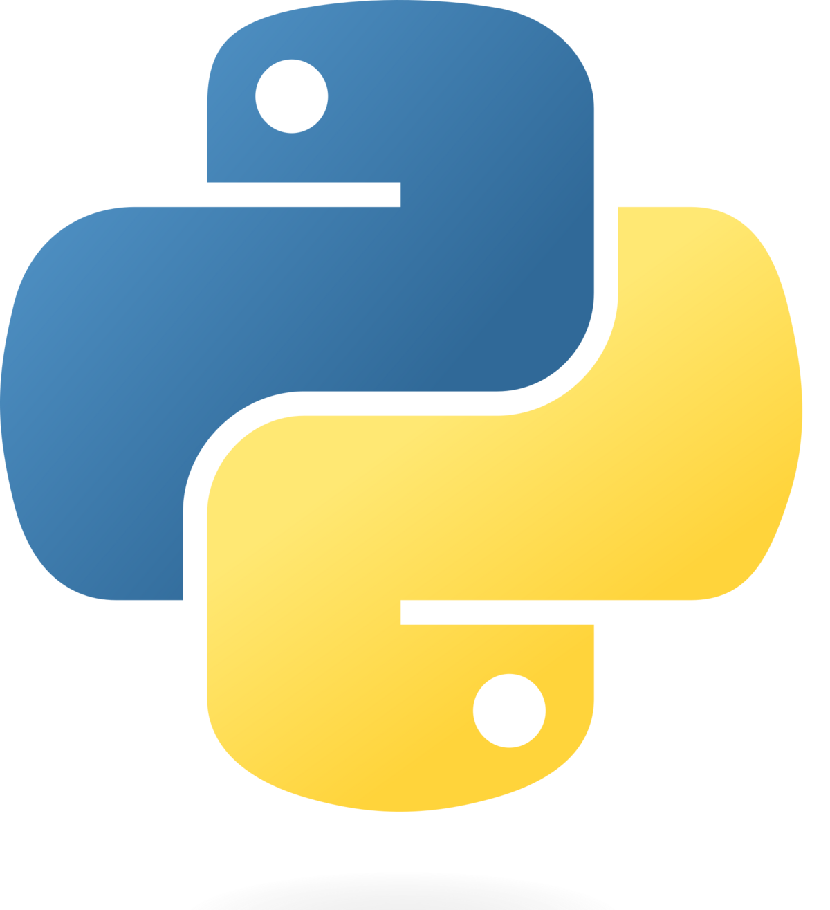
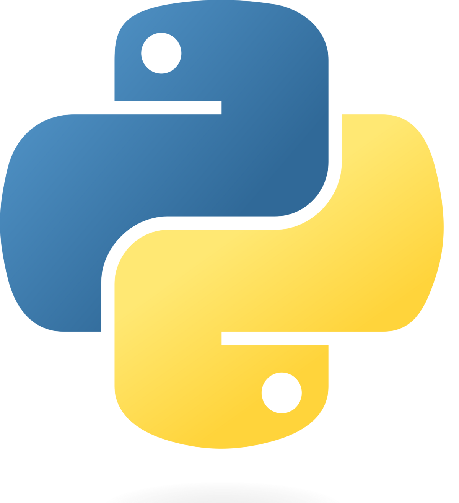
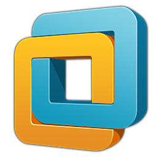
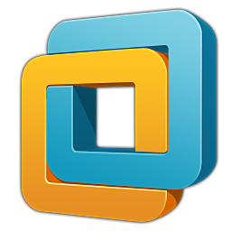

Qu’est-ce que la veille technologique ?
La veille technologique consiste à se tenir informé en permanence des évolutions, innovations et tendances dans un domaine spécifique — ici, le domaine de l'informatique et du développement.
Elle permet de rester à jour, de mieux anticiper les changements, et de faire des choix technologiques adaptés dans ses projets professionnels ou personnels.
Elle peut porter sur : des langages de programmation, des frameworks, des outils, de nouveaux usages, ou encore l’évolution du matériel.
Exemple de veille : Unreal Engine 5 dans le projet Astra Nova
Astra Nova est un jeu vidéo de nouvelle génération qui utilise Unreal Engine 5 (UE5), un moteur développé par Epic Games, pour créer un univers riche, immersif et interactif.
Technologies utilisées :
- Unreal Engine 5 : permet de générer des mondes ouverts avec un rendu graphique de haute qualité grâce à Lumen (lumière dynamique), Nanite (géométrie virtuelle) et World Partition (chargement modulaire).
- Intelligence Artificielle (IA) : les personnages non-joueurs (PNJ) apprennent en temps réel selon les actions du joueur, rendant l’expérience plus réaliste.
- Web3 et Blockchain : pour une expérience de jeu décentralisée et personnalisée.
- NVIDIA : via son programme Inception, offre une puissance de calcul essentielle pour entraîner les IA du jeu.
Grâce à cette combinaison de technologies, Astra Nova illustre parfaitement les apports de la veille technologique : anticiper les tendances pour créer des expériences innovantes.


 

 
